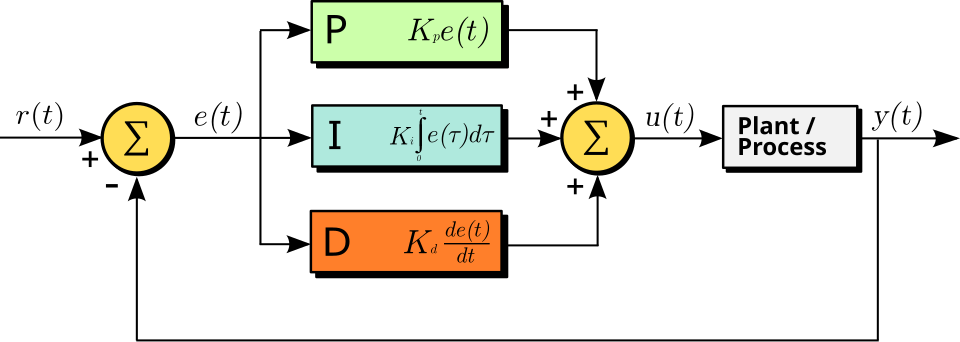

Biology uses a simple PID controller with proportional, integral, and derivative components. In simple words, it means that the output of the system (the output voltage measurable on the AIS) depends on the input voltage (the present: input current if the resistance is constant), the integrated input current(s) (the past: how much the biological objects changed due to electrical effects), and their derivatives (the future: how the actual gradients tend to form the action potential). (Notice that calculating the derivatives of the interdependent parameters needs care, as discussed in [114], given that the components are non-ideal biological components rather that the ideal discrete components.) The sum of those summands defines the resulting output voltage. The biological case is more complicated than the technical one because biology works with slow ions, and the components have their temporal dependence (applying the laws created for fast currents needs emulation, as discussed in section 2.4.5). Furthermore, the summands have several constituents and the neurons handle those current-related constituents autonomously. That is, unlike what is assumed in the classic physiology, the output voltage is not necessarily a simple function of the mentioned input variables; furthermore, it is not sufficient to consider the ”present” of the system. The classic models all omit the derivatives’ contributions (a direct consequence of using clamping that ’freezes’ their state, the ’future’ cannot be interpreted) except that of the capacitive current, which is the passive consequence of the input currents. Furthermore, the ’Integrate and Fire’-type models consider the integrated currents only in the ’charge-up’ (’Computing’) period of operation and they entirely omit that different physical processes are going on in different stages of operation. That is, even the best classic models can not describe neuronal operation completely and correctly.
The gradients are used to adjust the process variable through their positive and negative contributions (corresponding to rising and falling edges), and the different speeds of the thermodynamic and electrical interactions minimize the delay (i.e., provide the maximum operational speed, vital for survival). The steady-state error is minimized by setting the process variable to the reference point using long-term stable parameters (geometry and overall concentration). The low-intensity current through the always-open resting ion channels provides dynamic stability in the steady state.
We considered that neuron has a stable base state. On the one side, this resting state must be dynamically stabilized for little perturbations using as little energy as possible (and to provide a mechanism when the cell grows, divides, or ages). On the other side, it must be able to restore the state after rough perturbations as quickly as possible, causing short-time transients (when restoring the membrane’s potential after issuing a spike). In both the resting and transient states, the system attempts to return to its balanced state, though the mechanisms required differ.
In its excited state, the system aims to provide an intense output that informs the downstream neurons. This overshoot is initiated by a large number of voltage-gated ion channels (distinct from the non-gated ion channels used to maintain the resting potential) distributed in the neuron’s membrane. The overshoot current flows through those persistently open ion channels, which are concentrated in the AIS (which has about two orders of magnitude higher channel density than the wall). The intense slow current produces a condenser-like behavior (capacitive current); the phenomena called ”polarization” and ”hyperpolarization” (not polarization; instead, a movement of completely separated charge in the surface layer of the electrolyte) of the membrane provide the necessary positive and negative error signals for the controller in the transient state by moving the actual potential value of the membrane above and below the resting potential value. The potentials and the electrical field’s magnitudes depend on the concentration and the geometry (the finite size of the membrane). The ions’ chemical nature comes into play only if the polarizability can differ for different molecules.

The time course of the overall control function of the general PID controller in function of the error variable in Fig. 2.13 is described by
| (2.72) |
where is the time integration constant, is the derivative time constant (notice the independent time constants). That is, in the world of a neuron, the ”theory of everything” is
| (2.73) |
The first term represents the constant effect of the external world (including synaptic inputs, clamping, and exciting brain tissue). The second term represents the time-averaged contribution, such as charging up the membrane, including clamping current. The voltage is mainly due to current through ion channels in the membrane’s wall; it represents a parallel circuit. The third term represents the sum of the gradients due to all effects (the external world, the internal processes, and the outflow through the AIS); it represents a serial circuit. The underbraces of the equation identify which components of the neuron contribute the terms of the PID equation. The presence of some terms depends on the neuron’s actual stage; furthermore, the values in the parallel and serial circuit differ (resulting in different time constants).